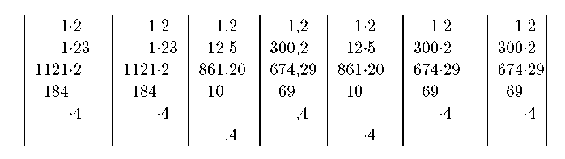

Dostarcza makroinstrukcjê D
(wywo³anie bez \ na pocz±tku),
która mo¿e byæ argumentem makroinstrukcji \newcolumn
(p. pakiet blkarray.sty).
Wywo³anie:
D{tsep}{dsep}{decimal places}
gdzie:
Przyklad:
\newcolumntype{d}[1]{D{.}{\cdot}{#1}}
\newcolumntype{.}{D{.}{.}{-1}}
\newcolumntype{,}{D{,}{,}{2}}
\begin{tabular}{|d{-1}|d{2}|.|,|d{3}|d{4}|d{1}|}
1.2 & 1.2 &1.2 &1,2 &1.2 &1.2&1.2 \\
1.23 & 1.23 &12.5 &300,2 &12.5 &300.2&300.2 \\
1121.2& 1121.2&861.20 &674,29 &861.20 &674.29&674.29 \\
184 & 184 &10 &69 &10 &69&69 \\
.4 & .4 & &,4 & &.4 &.4 \\
& &.4 &&.4 & &
\end{tabular}

 W³odzimierz Macewicz
W³odzimierz Macewicz